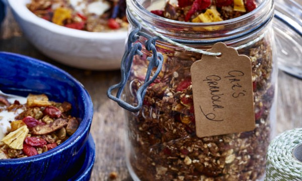

Home
Odin's Granola

Description
Borrowed from a recipe from Gaz Oakley
Ingredients
- 3 cups/240g Rolled Oats
- 1 cup/100g Walnuts, roughly chopped
- 1/2 cup/35g Hemp Seeds
- 1 & 1/2 cups/100g Coconut Flakes
- 2 tsp Ground Cinnamon
- 3 tbs Cacao Powder
- 1/4 cup/60g Maple Syrup
- 1 cup/100g Dried Fruit or Berries of your Choice, I use dried mango & goji berries
Steps
- Pre heat your oven to 180 degrees C & line a baking tray with grease proof paper.
- Add all the granola ingredients to a mixing bowl except the dried fruit & mix well. Transfer the mixture to the lined baking tray then place into the oven.
- Bake the granola for 8 minutes, giving it all a good mix half way through cooking.
- Once the granola is crisp and golden remove it from the oven & stir through the dried fruit.
- The granola will keep well in a sealed container for up to 3 weeks.
- I serve my granola up with plant based yoghurt, fresh berries & cacao nibs.